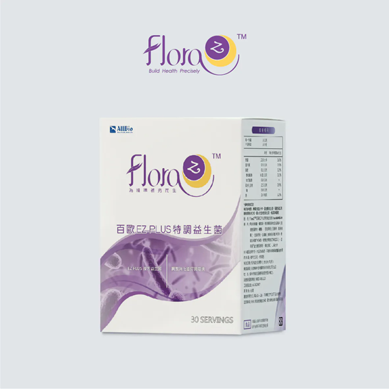

3 株
專利益生菌菌株
FloraZ 以腸腦軸概念切入睡眠保養，聚焦適合亞洲族群定殖的 3 株專利益生菌與益生菌發酵粉，強調從菌相與代謝物質的角度，協助建立更穩定的睡眠節奏與夜間休息品質。

FloraZ 認為腸道菌也會影響大腦運作與睡眠品質，因此配方設計聚焦可產生 GABA、色胺酸與短鏈脂肪酸的菌種與搭配。
情緒與腸道健康具有高度相關性。人體相當比例的血清素由胃腸道產生，而血清素也是與睡眠品質密切相關的重要物質。
挑選睡眠保養類益生菌時，可優先關注是否能產生短鏈脂肪酸、色胺酸與 GABA 等與壓力調節、睡眠節奏相關的代謝物。